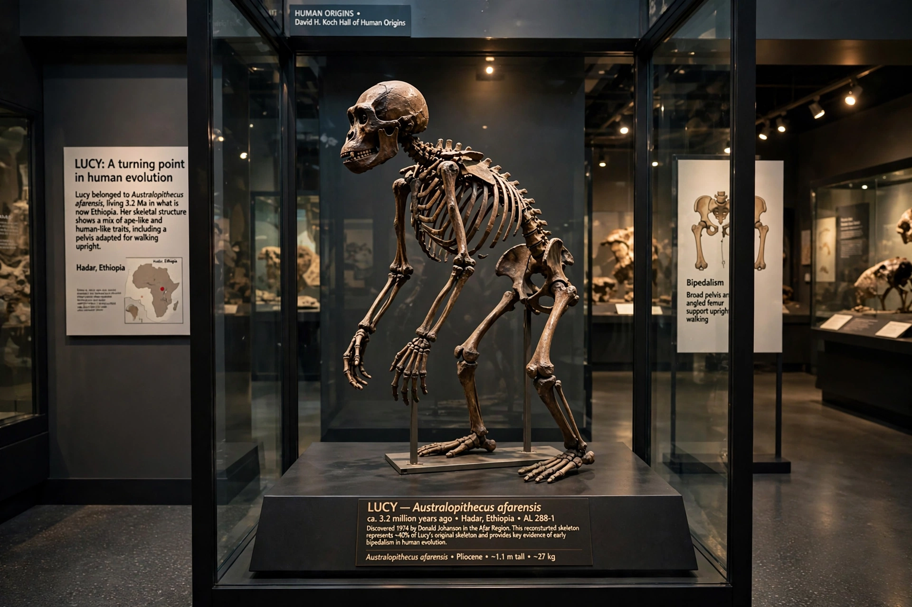

The australopithecines are a group of extinct hominins closely related to modern humans, generally classified in the genera Australopithecus and Paranthropus (and sometimes Kenyanthropus). They lived in Africa from roughly 4.2 to 1.2 million years ago, walked upright on two legs, but retained brains only slightly larger than a chimpanzee's and climbing adaptations in the shoulders and hands. One lineage of australopithecines gave rise to the genus Homo, and thus to humans.
The first recognised specimen was the Taung Child, a juvenile skull found in South Africa and described by Raymond Dart in 1925 as Australopithecus africanus ("southern ape of Africa"). Dismissed at first — the fraudulent Piltdown Man misled expectations — australopithecines were vindicated by Robert Broom's adult finds at Sterkfontein in the 1930s–40s. Mary Leakey's 1959 "Nutcracker Man" (Paranthropus boisei) from Olduvai Gorge transformed funding and interest in East African fieldwork.
Australopithecines were strongly sexually dimorphic; males of A. afarensis stood about 1.5 m and females about 1.1 m. Their pelvises and knees show habitual bipedalism, while curved finger bones suggest continued climbing. Brain volumes ranged from about 350 to 550 cm³. Dental microwear and isotope studies indicate varied diets of savanna and woodland foods. Whether australopithecines made stone tools is debated — the 3.3-million-year-old Lomekwi tools predate Homo, and cut-marked bones suggest meat-eating by A. afarensis times.
A. afarensis is widely considered ancestral or near-ancestral to later hominins; A. africanus and A. sediba have each been proposed as the direct ancestor of Homo, which appears by 2.8 million years ago. The robust lineage was an evolutionary side branch.